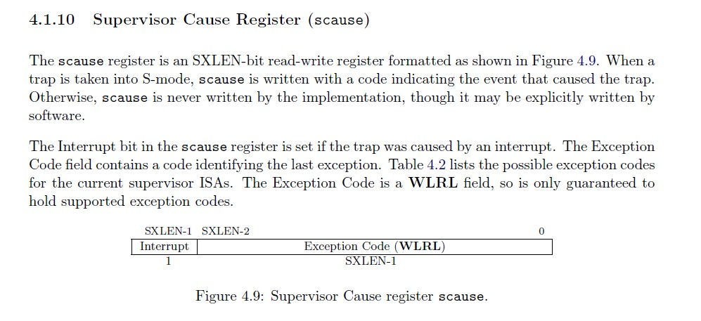

中断处理程序
中断处理需要初始化，所以我们在init.c里调用一些初始化的函数
// kern/init/init.c
#include <trap.h>
int kern_init(void) {
extern char edata[], end[];
memset(edata, 0, end - edata);
cons_init(); // init the console
const char *message = "(THU.CST) os is loading ...\n";
cprintf("%s\n\n", message);
print_kerninfo();
// grade_backtrace();
//trap.h的函数，初始化中断
idt_init(); // init interrupt descriptor table
//clock.h的函数，初始化时钟中断
clock_init();
//intr.h的函数，使能中断
intr_enable();
while (1)
;
}
// kern/trap/trap.c
void idt_init(void) {
extern void __alltraps(void);
//约定：若中断前处于S态，sscratch为0
//若中断前处于U态，sscratch存储内核栈地址
//那么之后就可以通过sscratch的数值判断是内核态产生的中断还是用户态产生的中断
//我们现在是内核态所以给sscratch置零
write_csr(sscratch, 0);
//我们保证__alltraps的地址是四字节对齐的，将__alltraps这个符号的地址直接写到stvec寄存器
write_csr(stvec, &__alltraps);
}
//kern/driver/intr.c
#include <intr.h>
#include <riscv.h>
/* intr_enable - enable irq interrupt, 设置sstatus的Supervisor中断使能位 */
void intr_enable(void) { set_csr(sstatus, SSTATUS_SIE); }
/* intr_disable - disable irq interrupt */
void intr_disable(void) { clear_csr(sstatus, SSTATUS_SIE); }
trap.c的中断处理函数trap, 实际上把中断处理,异常处理的工作分发给了interrupt_handler()，exception_handler(), 这些函数再根据中断或异常的不同类型来处理。
// kern/trap/trap.c
/* trap_dispatch - dispatch based on what type of trap occurred */
static inline void trap_dispatch(struct trapframe *tf) {
//scause的最高位是1，说明trap是由中断引起的
if ((intptr_t)tf->cause < 0) {
// interrupts
interrupt_handler(tf);
} else {
// exceptions
exception_handler(tf);
}
}
/* *
* trap - handles or dispatches an exception/interrupt. if and when trap()
* returns,
* the code in kern/trap/trapentry.S restores the old CPU state saved in the
* trapframe and then uses the iret instruction to return from the exception.
* */
void trap(struct trapframe *tf) { trap_dispatch(tf); }
我们可以看到，interrupt_handler()和exception_handler()的实现还比较简单，只是简单地根据scause的数值更仔细地分了下类，做了一些输出就直接返回了。switch里的各种case, 如IRQ_U_SOFT,CAUSE_USER_ECALL,是riscv ISA 标准里规定的。我们在riscv.h里定义了这些常量。我们接下来主要关注时钟中断的处理。
在这里我们对时钟中断进行了一个简单的处理，即每次触发时钟中断的时候，我们会给一个计数器加一，并且设定好下一次时钟中断。当计数器加到100的时候，我们会输出一个100ticks表示我们触发了100次时钟中断。通过在模拟器中观察输出我们即刻看到是否正确触发了时钟中断，从而验证我们实现的异常处理机制。
void interrupt_handler(struct trapframe *tf) {
intptr_t cause = (tf->cause << 1) >> 1; //抹掉scause最高位代表“这是中断不是异常”的1
switch (cause) {
case IRQ_U_SOFT:
cprintf("User software interrupt\n");
break;
case IRQ_S_SOFT:
cprintf("Supervisor software interrupt\n");
break;
case IRQ_H_SOFT:
cprintf("Hypervisor software interrupt\n");
break;
case IRQ_M_SOFT:
cprintf("Machine software interrupt\n");
break;
case IRQ_U_TIMER:
cprintf("User software interrupt\n");
break;
case IRQ_S_TIMER:
//时钟中断
/* LAB1 EXERCISE2 YOUR CODE : */
/*(1)设置下次时钟中断
*(2)计数器（ticks）加一
*(3)当计数器加到100的时候，我们会输出一个`100ticks`表示我们触发了100次时钟中断，同时打印次数（num）加一
* (4)判断打印次数，当打印次数为10时，调用<sbi.h>中的关机函数关机
*/
break;
case IRQ_H_TIMER:
cprintf("Hypervisor software interrupt\n");
break;
case IRQ_M_TIMER:
cprintf("Machine software interrupt\n");
break;
case IRQ_U_EXT:
cprintf("User software interrupt\n");
break;
case IRQ_S_EXT:
cprintf("Supervisor external interrupt\n");
break;
case IRQ_H_EXT:
cprintf("Hypervisor software interrupt\n");
break;
case IRQ_M_EXT:
cprintf("Machine software interrupt\n");
break;
default:
print_trapframe(tf);
break;
}
}
void exception_handler(struct trapframe *tf) {
switch (tf->cause) {
case CAUSE_MISALIGNED_FETCH:
break;
case CAUSE_FAULT_FETCH:
break;
case CAUSE_ILLEGAL_INSTRUCTION:
//非法指令异常处理
/* LAB1 CHALLENGE3 YOUR CODE : */
/*(1)输出指令异常类型（ Illegal instruction）
*(2)输出异常指令地址
*(3)更新 tf->epc寄存器
*/
break;
case CAUSE_BREAKPOINT:
//非法指令异常处理
/* LAB1 CHALLLENGE3 YOUR CODE : */
/*(1)输出指令异常类型（ breakpoint）
*(2)输出异常指令地址
*(3)更新 tf->epc寄存器
*/
break;
case CAUSE_MISALIGNED_LOAD:
break;
case CAUSE_FAULT_LOAD:
break;
case CAUSE_MISALIGNED_STORE:
break;
case CAUSE_FAULT_STORE:
break;
case CAUSE_USER_ECALL:
break;
case CAUSE_SUPERVISOR_ECALL:
break;
case CAUSE_HYPERVISOR_ECALL:
break;
case CAUSE_MACHINE_ECALL:
break;
default:
print_trapframe(tf);
break;
}
}
下面是RISCV标准里scause的部分，可以看到有个scause的数值与中断/异常原因的对应表格。


下一节我们将仔细讨论如何设置好时钟模块。